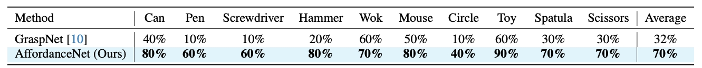

1 The Chinese University of Hong Kong
2 Institute of Computing Technology, Chinese Academy of Sciences
3 Dexmal
4 Mohamed bin Zayed University of Artificial Intelligence
5 SKL-IOTSC, CIS, University of Macau
*Project Lead
†Corresponding Authors
General robotic grasping systems require accurate object affordance perception in diverse open-world scenarios following human instructions. However, current studies suffer from the problem of lacking reasoning-based large-scale affordance prediction data, leading to considerable concern about open-world effectiveness. To address this, we build a large-scale grasping-oriented affordance segmentation benchmark with human-like instructions, named RAGNet. It contains 273k images, 180 categories, and 26k reasoning instructions. The images cover diverse embodied data domains, such as wild, robot, ego-centric, and simulation data. They are carefully annotated with an affordance map, while the difficulty of language instructions is largely increased by removing their category name and only providing functional descriptions. Furthermore, we propose a comprehensive affordance-based grasping framework, named AffordanceNet, which consists of a VLM pretrained on our massive affordance data and a grasping network that conditions an affordance map to grasp the target. Extensive experiments on affordance segmentation benchmarks and real-robot manipulation tasks show that our model has a powerful open-world generalization ability.
Fig 1: From large-scale reasoning-based affordance segmentation benchmark to general grasping.
Reasoning-based Affordance Segmentation Benchmark
We build large-scale affordance segmentation data from various image sources, including wild, robot, ego-centric, and simulated data, named RAGNet. It has 273k images, 180 categories, 26k distinct expressions.
We design a set of annotation tools to label the graspable regions of objects.
Table 1: Comparisons between previous affordance data and our collection.
We create two types of reasoning-based instructions beyond the template-based instructions. One includes the name of the object and the other omits it. Take a mug as an example: “Can you find me a mug for tea?” versus “I need something to drink coffee”. This approach closely mirrors real-life human interactions.
Fig 2: Easy (left) v.s. Hard (right) reasoning instruction.
The hard version has no category name itself.
AffordanceNet
AffordanceNet has two key components: AffordanceVLM for predicting affordance segmentation mask and pose generation for transforming the mask into grasper position in 3D space.
AffordanceVLM.
AffordanceVLM is based on the vision-language segmentation model LISA and incorporates two essential task-specific modifications to enhance affordance prediction: (1) developing a specialized system prompt, and (2) introducing a unique <AFF> token.
Pose generation.
The predicted 2D affordance mask along with depth map is projected into 3D space, formulating 3D object affordance. Various grasping models can be used to generate grasper position.
Fig 3: Overview of our data annotation pipeline and manipulation model.
Experiments
Evaluation on Visual Affordance
To minimize unnecessary source expenditure, we initially validate the quality of affordance segmentation prior to object grasping.
Table 2: Quantitative results on affordance segmentation.
Table 3: Quantitative results on reasoning-based affordance segmentation.
Evaluation on Object Grasping
We deploy UR5 robot arm with a thirdperson RGB-D camera (Intel RealSense). We design 10 distinct grasping tasks, including grasping the can, pen, screwdriver, hammer, wok, mouse, circle, toy, spatula, scissors.
Half of them require accurately localizing the affordance
region, like the screwdriver handle. Each task is performed
10 times, and we report the average success rate. Note that, we never provide any demonstration images or videos from this scene for our model training.

Table 4: Average success rates on robotic grasping.
Visualizations
BibTeX
If you find this work useful, please consider citing it:
@article{wu2025ragnet,
title={RAGNet: Large-scale Reasoning-based Affordance Segmentation Benchmark towards General Grasping},
author={Wu, Dongming and Fu, Yanping and Huang, Saike and Liu, Yingfei and Jia, Fan and Liu, Nian and Dai, Feng and Wang, Tiancai and Anwer, Rao Muhammad and Khan, Fahad Shahbaz and Shen, Jianbing},
year={2025}
}